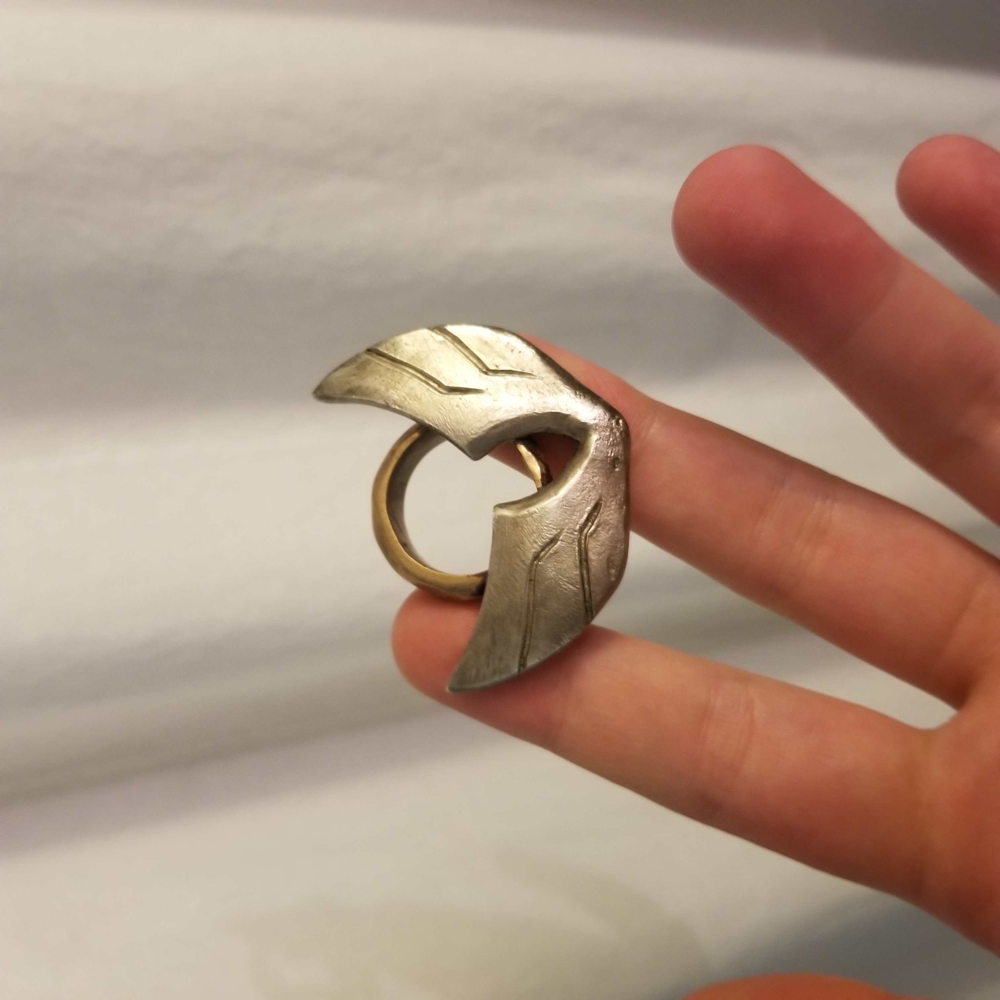

Projects
1. Aftermath

Aftermath is to present how we can reimagine existing objects to have a different meaning and then bring it into the physical space. The process itself was to take existing/found models and present them together as a new creation. The work was greatly inspired by several amazing communities that create and share their work on these 3D creations. The design was based around the sword itself and then later inspired by medieval warfare and post-war research. This was later expanded on with the combination of fantasy as I wanted to bring a feeling of fantasy to the project overall. The project has also given the opportunity to work with 3D Printing technology to be able to bring my work to the physical space (Figure 2.2). However, there are difficulties with using this technology as it currently is unable to print the exact details of the object and that the printers themselves are limited in their capabilities, so the objects are needed to be sculpted in advance with those limitations in mind. Other difficult parts in creating this were the limitations of Maya’s own software. Maya itself is not perfect so when attempting to connect complex objects into one, it will sometimes lead to problems overall. Fortunately, Maya also includes other abilities to help correct the error.
2. FNAF: Now Cute?


Here is a reimagining of the popular indi horror game Five Nights at Freddy's as toy merchandise.
My practice reimagines several fictional characters as merchandise. The work takes inspiration from the well-known fictional characters within pop culture and gaming communities and recreates them as sellable toys or merchandise. Each merchandise takes reference from popular games within the gaming community. Recreate each character so that they all follow a certain identifiable aspect of the merchandise. Such aspects can include the round silhouette of each figure and the cute and adorable feel of each figure along with others.
The foundation of this work lies in the fact that I intend for my merchandise to be presented in the physical space as other merchandise. This project works around the use of the 3D Printers where I’ll be to directly present the work physically. This practice was founded on the interest towards 3D Printing technology and the growing popularity of recent indie games such as Five Nights at Freddy’s or Bendy and the Ink Machine. This work enables myself to be engage with the technology I have grown interest in. Each piece created is intended to be similar of other toys or merchandises where the audience or interest groups will hold interest and purchase or collect.
3. Winged
Casted Bronze and Sterling Silver
4. Protect

Sculpture constructed with welding steel plates and 3D Print.
This sculpture can be considered as a inspirational symbolic piece as the intended message is that either one's self-esteem or artistic persuits. No matter what attacks you or tries to bring you down, you will always stay true to your core. The green 3D printed heart is to represent the core and the rusted and damaged steel walls surrounding the core are the lines of defence protecting the core.
5. Xenith Defenders
Here is a unique one-bit style player vs. player multiplayer game created in cooperation with fellow student Chaz Acheronti. I was the visual designer and crested all the visual assets used for this game. The inital plan was to include computer-controlled "bugs" into the game as a player vs. enemies mode. However, due to time restrants we needed to drop that aspect.
Link to purchase a copy of the game here6. Loop


7. Trash Infill
This sculpture was created solely using items that were scrapped or thrown away. The main structure of this sculpture was with a plastic egg cartridge that was thrown away in the trashbin (not reycling bin).
8. Toy Detector
This detector can detect unusual sign of light (with a photocell) the monitor (two leds) will determine the concentration of said light and if the concentraion is too high, the built-in speaker will alert me with a loud pitch.
It is considered a "toy" becuase in its current state the detector has no real function and the controls that control the lights and speaker are similar to how actual toys act with controls.
9. Against the Wall
Against the Wall uses motion and animation to leave interpretation open. The lack of context gives the opportunity to work with animating our creations to preform several functions. Here I had a simple shaped character preform the action of throwing a ball and then repeated that animation continuously to have the character play repeatedly. I have chosen this action as I felt that such a straightforward process of throwing the ball was enough to allows others to interpret complex meaning or otherwise from the work. However, animation with the use of Maya proves to be difficult continuously.
10. Dance
Dance was with the intent of creating an animating character that reflect our own personal being. Building upon the lessons of animation from the previous project, I made him “dance” around with wide movements to music because people have always told me that I was been active in terms of moving around so I decided to depict that here. The character itself was based on a past project for a wooden project and I wanted to recreate it into a digital space as that was the initial plan I had with it. I'd simply used flat pieces of various shapes to replicate the shapes I created in the wood shop. The project expands on the application of animating the objects done for previous projects to present the process itself was to take existing/found models and present them together as a new creation he intended action.